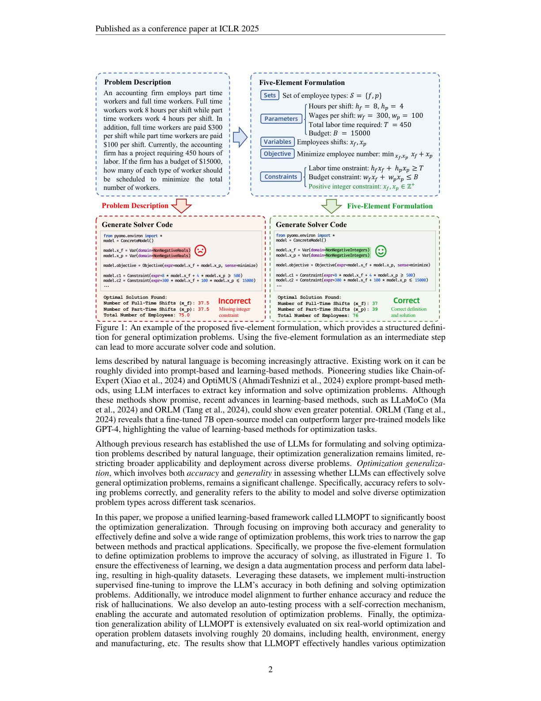
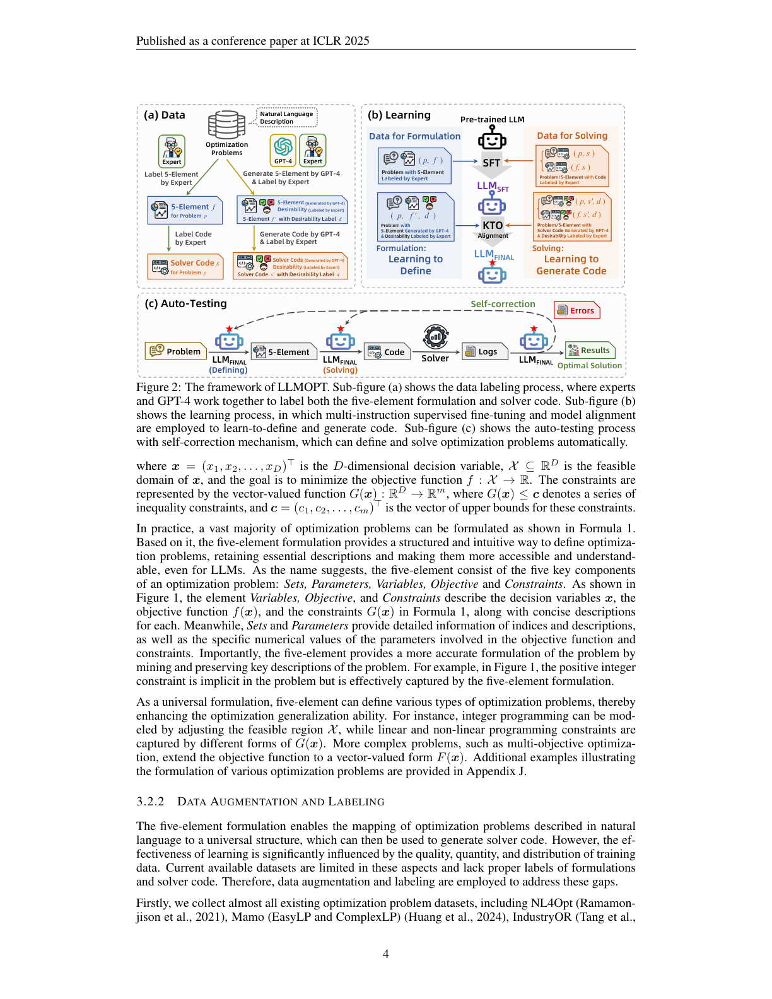
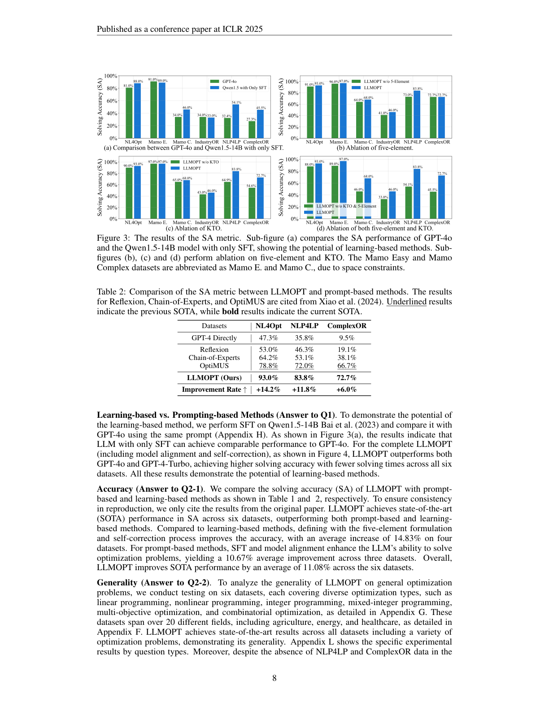
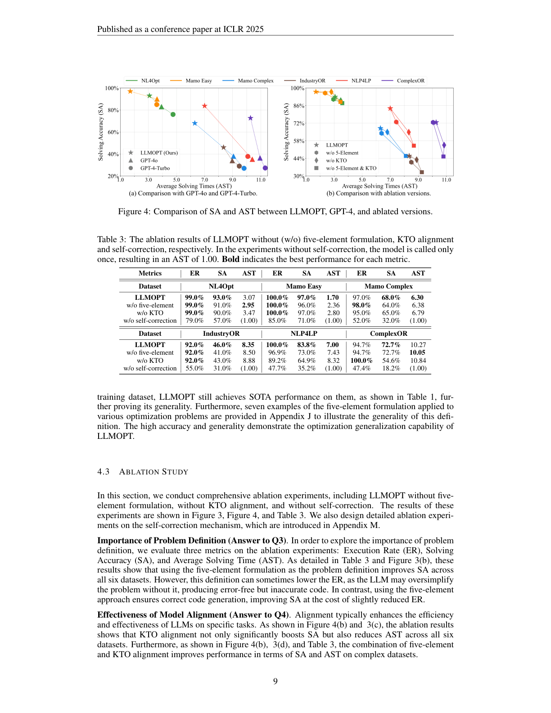

面向「优化泛化」的统一学习框架：五要素形式化 + 多指令 SFT + KTO 对齐 + 自校正
优化问题广泛存在于各种场景中。用自然语言描述并进而求解优化问题，往往高度依赖领域专家知识，这阻碍了基于优化的决策方法的普及应用。为自动化「问题形式化 + 求解」，借助大语言模型（LLM）成为一条可行路径。然而这类方法存在优化泛化（optimization generalization）问题：当前多数 LLM 方法的求解精度，以及它们所能建模的优化问题类型的通用性，都仍然有限。
本文提出统一的基于学习的框架 LLMOPT 来提升优化泛化能力。从自然语言描述与预训练 LLM 出发，LLMOPT 构建所提出的「五要素形式化（five-element formulation）」作为学习定义多样化优化问题类型的通用模型；随后采用多指令微调（multi-instruction tuning）提升问题形式化与求解代码生成的精度与通用性；为抑制 LLM 的幻觉（例如为避免执行错误而牺牲求解精度），进一步引入模型对齐与自校正机制。我们在覆盖健康、环境、能源、制造等约 20 个领域的 6 个真实数据集上评估了 LLMOPT 与对比方法的优化泛化能力。大量实验表明，LLMOPT 能够建模线性/非线性规划、混合整数规划、组合优化等多种问题类型，相比当前最优方法平均求解精度提升 11.08%。
优化问题在作业调度、路径规划、匹配、强化学习、收益管理、安全博弈等众多场景中普遍存在。尽管已有强大的求解器，但从自然语言描述中形式化定义特定领域优化问题并编写求解代码，是高度复杂的任务，需要专业知识、专家参与与大量时间投入。以金融投资组合问题为例，其常涉及数千变量与全投资、基数、预分配等复杂约束，专家介入对得到低简单遗憾的精确解至关重要。
随着 ChatGPT、GPT-4 等 LLM 的快速发展，用 LLM 自动形式化并求解自然语言描述的优化问题日益受到关注。相关研究大致分为基于提示（prompt-based）与基于学习（learning-based）两类：Chain-of-Expert、OptiMUS 等探索提示方法；LLaMoCo、ORLM 等学习类方法展现出更大潜力——ORLM 表明一个微调过的 7B 开源模型即可超越 GPT-4 等更大的预训练模型。
尽管已有研究确立了用 LLM 形式化与求解优化问题，但其优化泛化仍然有限。优化泛化同时涵盖「精度（accuracy，能否正确求解）」与「通用性（generality，能否建模并求解跨场景的多样化问题类型）」两方面。本文提出统一学习框架 LLMOPT 来显著提升优化泛化：提出五要素形式化以改进求解精度（如图 1）；设计数据增强与标注流程得到高质量数据集；用多指令有监督微调提升 LLM 在「定义」与「求解」两方面的精度；引入模型对齐进一步提精度、降幻觉风险；并开发带自校正机制的自动测试流程，实现优化问题的准确、自动化求解。在覆盖约 20 个领域（健康、环境、能源、制造等）的 6 个真实数据集上的广泛评估表明，LLMOPT 有效处理线性/非线性规划、混合整数规划、组合优化等问题，平均精度较 SOTA 提升 11.08%。
用 LLM 形式化并求解优化问题：NL4Opt 竞赛推动了该方向探索。基于提示的方法利用现成 LLM 接口自动化求解（如 CoE 的分阶段智能体工作流、OptiMUS 面向 LP/MILP 的定制提示）；基于学习的方法相对未被充分探索，LLaMoCo 以 code-to-code 方式做指令微调，ORLM 在指令微调阶段半自动生成合成训练数据；Mamo 提供数学建模基准与标准化求解代码生成流程。
LLM 作为优化器的组件：Yang 等人受贝叶斯优化启发用 LLM 作优化器；Guo 等人把 LLM 用作遗传算法的交叉/变异算子；Liu 等人在 TSP 中由 LLM 生成新轨迹迭代优化；还有工作将 LLM 用于多目标优化，以及用于贝叶斯优化中的采集函数与代理模型模拟。
LLMOPT 框架（如图 2）由数据（data）、学习（learning）、自动测试（auto-testing）三大部分组成：§3.2 介绍五要素形式化及训练数据的增强与标注；§3.3 详述多指令 SFT 与模型对齐；§3.4 给出带自校正的自动测试流程。

3.2.1 通用形式化。数学上优化问题可形式化为 $\min_{x\in X\subseteq\mathbb{R}^D} f(x),\;\text{s.t.}\;G(x)\le c$，其中 $x$ 为 $D$ 维决策变量，$X$ 为可行域，$f$ 为目标函数，$G(x)\le c$ 为不等式约束。基于此，五要素形式化用 Sets（集合）、Parameters（参数）、Variables（变量）、Objective（目标）、Constraints（约束）五个关键组件结构化地定义优化问题：Variables/Objective/Constraints 分别对应式中的 $x$、$f(x)$、$G(x)$，Sets 与 Parameters 提供索引、描述及数值。五要素通过挖掘并保留问题的关键描述，给出更精确的形式化——例如图 1 中隐含的「正整数约束」被五要素有效捕获。作为通用形式，五要素可定义多种问题类型：整数规划通过调整可行域 $X$ 建模，线/非线性规划由不同形式的 $G(x)$ 表达，多目标优化则把目标扩展为向量值 $F(x)$。
五要素形式化把自然语言优化问题映射到通用结构，进而可生成求解代码。但现有数据集在质量、数量、分布上有限且缺乏形式化与代码标签，因此进行数据增强与标注。我们收集 NL4Opt、Mamo、IndustryOR、NLP4LP、ComplexOR 等几乎所有现有数据集，每数据集随机取 100 条作为保留测试集（不足 100 的全部用于测试），其余用于增强以保证训测分离。增强时利用提示工程对 1,763 条种子问题施加 7 类不同指令（改约束、换场景、换优化类型等），再由专家审核剔除描述不清或不可行的问题。随后由专家用五要素与求解代码进行标注，并用 GPT-4 生成「正确性不确定」的标签用于模型对齐（图 2(a)）：专家标注五要素 $f$ 与代码 $s$，GPT-4 生成 $f'$ 与 $s'$，专家验证并给出期望性标签 $d'$（True/False），从而得到「完全精确」与「可能含错但经专家验证」两类数据，分别适配 SFT 与对齐。

3.3.1 多指令 SFT。直接用 LLM 求解自然语言优化问题常因无法全面捕获隐含信息而不准。多指令数据集 $D_{\text{SFT}}=D^f_{\text{SFT}}\cup D^s_{\text{SFT}}$（专家标注）分别提升「形式化」与「代码生成」能力：$D^f_{\text{SFT}}$ 提供（问题模板化 $u_i$, 五要素 $v_i$）配对；$D^s_{\text{SFT}}$ 含两类（问题→代码、五要素→代码）。给定指令 $u$ 与标签 $v$，SFT 目标为最大化条件概率 $p(v|u)$，即最小化负对数似然：
3.3.2 模型对齐。尽管 SFT 让模型学会写求解代码，面对新问题仍可能幻觉（输出看似合理实则编造）。为此引入模型对齐（其他学习方法未采用）：选用 Kahneman-Tversky 优化（KTO），它避免奖励模型偏差，并缓解 PPO/DPO 等排序方法的数据需求。KTO 用（指令, 续写, 期望性）数据对齐，数据集 $D_{\text{KTO}}$ 含 GPT-4 续写与专家期望性标签。最优奖励表达为 $r^*_{\text{KTO}}(u,v)=\beta\log\frac{\pi^*(v|u)}{\pi_{\text{ref}}(v|u)}$，价值函数以 sigmoid 替代指数：
其中 $z_{\text{ref}}=\beta\,\mathrm{KL}(\pi^*(v'|u)\|\pi_{\text{ref}}(v'|u))$，权重函数 $w(v)=\lambda_D$（期望）/$\lambda_U$（不期望），最终 KTO 损失 $L_{\text{KTO}}(\pi^*,\pi_{\text{ref}})=\mathbb{E}_{(u,v,d)\sim D_{\text{KTO}}}[w(v)(1-\phi_{\text{KTO}}(u,v;\beta))]$，鼓励最优模型 $\pi^*$ 产出更贴合专家标注的续写，提升形式化与求解的优化泛化。
自动测试流程中：先用五要素基于自然语言描述形式化问题；再为五要素生成求解代码并执行；最后分析运行日志（输出结果与错误）以决定是否需要自校正。受 Chen 等人启发，自校正围绕「问题、五要素、求解代码、执行输出」组织指令，由自校正 LLM 判定是否需进一步求解或已达最优解；若需修正，则生成带建议的分析并回到「形式化」或「代码生成」步骤。该机制使优化流程更鲁棒、自适应，提升形式化与最终解的精度。
基于开源 LLM Qwen1.5-14B 进行 SFT 与模型对齐，与多种学习类/提示类方法及 GPT-4 对比，回答四个问题：(Q1) 学习类 vs. 提示类方法的优势；(Q2) 优化泛化（精度与通用性）；(Q3) 五要素形式化的作用；(Q4) 模型对齐的有效性。
在 NL4Opt、Mamo（Easy/Complex）、IndustryOR、NLP4LP、ComplexOR 六个真实数据集上实验，涵盖约 20 个场景与 7 类优化问题，训测严格分离。采用三个指标：执行率 ER（代码无错运行并产出结果的比例）、求解精度 SA（正确求得最优解的比例）、平均求解次数 AST（自校正次数，上限 12 次）。

学习类 vs. 提示类（Q1）：仅做 SFT 的 Qwen1.5-14B 即可达到与 GPT-4o 相当的性能；完整 LLMOPT（含对齐与自校正）在全部 6 个数据集上以更少求解次数超越 GPT-4o 与 GPT-4-Turbo（图 4），展示了学习类方法的潜力。
精度（Q2-1）：LLMOPT 在 6 个数据集的 SA 上均达 SOTA，相对学习类方法平均提升 14.83%（四数据集），相对提示类提升 10.67%（三数据集），整体平均提升 11.08%。
通用性（Q2-2）：在覆盖线性/非线性/整数/混合整数/多目标/组合优化等类型、跨 20+ 领域的 6 个数据集上均达 SOTA，即便 NLP4LP、ComplexOR 未参与训练也取得 SOTA，证明其通用性。

综合消融（图 3、图 4、表 3）表明：五要素形式化作为问题定义在所有 6 个数据集上提升 SA（虽偶尔略降 ER，因无它时模型会过度简化产出无错但不准的代码）；KTO 对齐在全部数据集上同时显著提升 SA 并降低 AST；二者结合在复杂数据集上进一步改善 SA 与 AST。
更大模型的尝试：在 Qwen2-72B 上部署，Mamo Complex 与 IndustryOR 上 SA/ER 较 Qwen1.5-14B 明显提升；但因训练/部署成本与「绿色计算」权衡，且 14B 已达 SOTA，故仍选用 14B。
与 OpenAI o1 对比：o1 单次调用在 Mamo Complex 的 10 简单/10 复杂问题上分别解出 7/5 题，比 GPT-4 系列更准；但受 API 限制、缺技术细节与高成本影响，用 LLMOPT 微调开源模型是更经济实惠的工业方案。
LLM 的跷跷板问题：在 10 个通用任务（数学、代码、分类、抽取、问答、生成等）上对比微调前后，6 项提升、4 项下降，平均提升 0.3%，未见显著跷跷板效应。
高质量训练数据：自然语言描述的优化问题数据稀缺且常缺高质量标签（如 IndustryOR 有错标最优解、NL4Opt 仅实体标签），专家标注耗时耗力；如何高效收集/合成更多多样且良标的优质数据，以及理解数据库/文件中的大规模问题结构，仍是未来方向。
本文聚焦 LLM 的优化泛化挑战（求解精度与可处理问题类型的通用性），提出基于学习的框架 LLMOPT，通过多指令 SFT 与模型对齐显著提升 LLM 定义并求解通用优化问题的能力。LLMOPT 引入五要素形式化作为各类优化问题的通用定义以增强求解精度，并在广泛优化任务上取得 SOTA 的优化泛化能力——平均求解精度提升 11.08%。